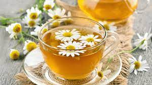

Tea for Blue

Description
Hot tea, slightly sweet. Meant to warm up a cold Blue :)
Ingredients
- Dried chamomile tea leaves
- boiled hot water
- 3/4 tsp sugar
- clear glass cup
Steps
- Put leaves into tea strainer.
- Add hot water to the leaves.
- Leave to steep for 3-5 minutes.
- Pour steeped liquid in clear glass cup.
- Stir in sugar
- Serve hot and with head pats. Enjoy!